Cloud Native Remote Sensing with Python (Full Course)
A structured introduction to XArray, DuckDB, STAC and Dask for cloud-based remote sensing applications.
Ujaval Gandhi
Introduction
This is an intermediate-level course that covers tools and techniques for working with climate and earth observation datasets using modern cloud-native approach. With the growing ecosystem of powerful packages like XArray and Dask - Python providers a powerful toolkit for working with large spatio-temporal raster datasets. This workshop will show you how you can effectively process large volumes of earth observation data using cloud-based datasets.
Notebooks and Datasets
This workshop uses Google Colab for all exercises. You do not need to install any packages or download any datasets.
The notebooks can be accessed by clicking on the  buttons at the beginning of each section. Once
you have opened the notebook in Colab, you can copy it to your own
account by going to File → Save a Copy in Drive.
buttons at the beginning of each section. Once
you have opened the notebook in Colab, you can copy it to your own
account by going to File → Save a Copy in Drive.
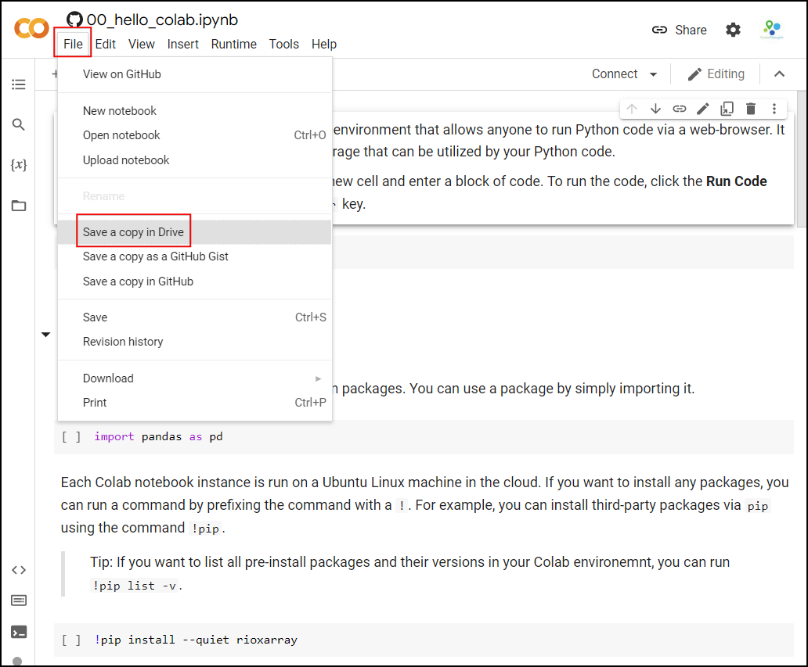
Once the notebooks are saved to your drive, you will be able to modify the code and save the updated copy. You can also click the Share button and share a link to the notebook with others.
Hello Colab

Google Colab is a hosted Jupyter notebook environment that allows anyone to run Python code via a web-browser. It provides you free computation and data storage that can be utilized by your Python code.
You can click the +Code button to create a new cell and
enter a block of code. To run the code, click the Run
Code button next to the cell, or press Shirt+Enter
key.
Package Management
Colab comes pre-installed with many Python packages. You can use a package by simply importing it.
Each Colab notebook instance is run on a Ubuntu Linux machine in the
cloud. If you want to install any packages, you can run a command by
prefixing the command with a !. For example, you can
install third-party packages via pip using the command
!pip.
Tip: If you want to list all pre-install packages and their versions in your Colab environemnt, you can run
!pip list -v.
Data Management
Colab provides 100GB of disk space along with your notebook. This can be used to store your data, intermediate outputs and results.
The code below will create 2 folders named ‘data’ and ‘output’ in your local filesystem.
import os
data_folder = 'data'
output_folder = 'output'
if not os.path.exists(data_folder):
os.mkdir(data_folder)
if not os.path.exists(output_folder):
os.mkdir(output_folder)We can download some data from the internet and store it in the Colab environment. Below is a helper function to download a file from a URL.
import requests
def download(url):
filename = os.path.join(data_folder, os.path.basename(url))
if not os.path.exists(filename):
with requests.get(url, stream=True, allow_redirects=True) as r:
with open(filename, 'wb') as f:
for chunk in r.iter_content(chunk_size=8192):
f.write(chunk)
print('Downloaded', filename)Let’s download the Populated Places dataset from Natural Earth.
The file is now in our local filesystem. We can construct the path to
the data folder and read it using geopandas
file = 'ne_10m_populated_places_simple.zip'
filepath = os.path.join(data_folder, file)
places = gpd.read_file(filepath)Let’s do some data processing and write the results to a new file. The code below will filter all places which are also country capitals.
We can write the results to the disk as a GeoPackage file.
output_file = 'capitals.gpkg'
output_path = os.path.join(output_folder, output_file)
capitals.to_file(driver='GPKG', filename=output_path)You can open the Files tab from the left-hand panel
in Colab and browse to the output folder. Locate the
capitals.gpkg file and click the ⋮ button
and select Download to download the file locally.
Rather than saving it to the temporary machine where Colab is running, we can save it to our own Google Drive. This will ensure the image will be available to us even after existing Google Colab.
Run the following cell to authenticate and mount the Google Drive.
if 'google.colab' in str(get_ipython()):
from google.colab import drive
drive.mount('/content/drive')drive_folder_root = 'MyDrive'
output_folder = 'data'
drive_folder_path = os.path.join(
'/content/drive', drive_folder_root, output_folder)
# Check if Google Drive is mounted
if not os.path.exists('/content/drive'):
print("Google Drive is not mounted. Please run the cell above to mount your drive.")
else:
if not os.path.exists(drive_folder_path):
os.makedirs(drive_folder_path)Module 1: Cloud Native Geospatial Fundamentals
1.1 XArray Basics

Overview
XArray
has emerged as one of the key Python libraries to work with gridded
raster datasets. It can natively handle time-series data making it ideal
for working with Remote Sensing datasets. It builds on NumPy/Pandas for
fast arrays/indexing and is orders of magnitude faster than other Python
libraries like rasterio. It has a growing ecosystem of
extensions rioxarray, xarray-spatial,
XEE and more allowing it to be used for geospatial
analysis. XArray offers the flexibility to seamlessly work with local
datasets along with cloud-hosted datasets in a variety of optimized data
formats.
In this section, we will learn about XArray basics and learn how to work with a time-series of Sentinel-2 satellite imagery to create and visualize a median composite image.
Setup and Data Download
The following blocks of code will install the required packages and download the datasets to your Colab environment.
%%capture
if 'google.colab' in str(get_ipython()):
!pip install pystac-client odc-stac rioxarray dask['distributed'] botocoreGet Satellite Imagery
We define a location and time of interest to get some satellite imagery.
Let’s use Element84 search endpoint to look for items from the sentinel-2-l2a collection on AWS.
catalog = pystac_client.Client.open(
'https://earth-search.aws.element84.com/v1')
# Configure settings for reading from Earth Search STAC
configure_s3_access(
aws_unsigned=True,
)
# Define a small bounding box around the chosen point
km2deg = 1.0 / 111
x, y = (longitude, latitude)
r = 1 * km2deg # radius in degrees
bbox = (x - r, y - r, x + r, y + r)
search = catalog.search(
collections=['sentinel-2-c1-l2a'],
bbox=bbox,
datetime=f'{year}',
query={'eo:cloud_cover': {'lt': 30}},
)
items = search.item_collection()Load the matching images as a XArray Dataset.
XArray Terminology
We now have a xarray.Dataset object. Let’s understand
what is contained in a Dataset.
- Variables: This is similar to a band in a raster dataset. Each variable contains an array of values.
- Dimensions: This is similar to number of array axes.
- Coordinates: These are the labels for values in each dimension.
- Attributes: This is the metadata associated with the dataset.

A Dataset consists of one or more xarray.DataArray
object. This is the main object that consists of a single variable with
dimension names, coordinates and attributes. You can access each
variable using dataset.variable_name syntax.
Selecting Data
XArray provides a very powerful way to select subsets of data, using
similar framework as Pandas. Similar to Panda’s loc and
iloc methods, XArray provides sel and
isel methods. Since DataArray dimensions have names, these
methods allow you to specify which dimension to query.
Let’s select the image for the last time step. Since we know the
index (-1) of the data we can use isel method.
You can call .values on a DataArray to get an array of
the values.
You can query for a values at using multiple dimensions.
We can also specify a value to query using the sel()
method.
Let’s see what are the values of time variable.
We can query using the value of a coordinate using the
sel() method.
The sel() method also support nearest neighbor lookups.
This is useful when you do not know the exact label of the dimension,
but want to find the closest one.
Tip: You can use
interp()instead ofsel()to interpolate the value instead of closest lookup.
The sel() method also allows specifying range of values
using Python’s built-in slice() function. The code below
will select all observations during January 2023.
Aggregating Data
A very-powerful feature of XArray is the ability to easily aggregate data across dimensions - making it ideal for many remote sensing analysis. Let’s create a median composite from all the individual images.
We apply the .median() aggregation across the
time dimension.
Visualizing Data
XArray provides a plot.imshow() method based on
Matplotlib to plot DataArrays.
Reference : xarray.plot.imshow
To visualize our Dataset, we first convert it to a DataArray using
the to_array() method. All the variables will be converted
to a new dimension. Since our variables are image bands, we give the
name of the new dimesion as band.
The easy way to visualize the data without the outliers is to pass
the parameter robust=True. This will use the 2nd and 98th
percentiles of the data to compute the color limits. We also specify the
set_aspect('equal') to ensure the original aspect ratio is
maintained and the image is not stretched.
fig, ax = plt.subplots(1, 1)
fig.set_size_inches(5,5)
median_da.sel(band=['red', 'green', 'blue']).plot.imshow(
ax=ax,
robust=True)
ax.set_title('RGB Visualization')
ax.set_axis_off()
ax.set_aspect('equal')
plt.show()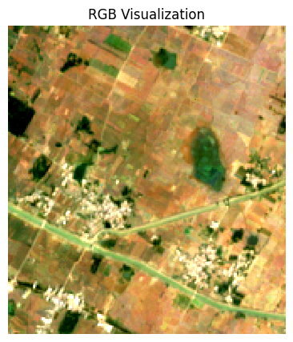
Exercise
Display the median composite for the month of May.
The snippet below takes our time-series and aggregate it to a monthly
median composites groupby() method.
You now have a new dimension named month. Start your
exercise by first converting the Dataset to a DataArray. Then extract
the data for the chosen month using sel() method and plot
it.
1.2 STAC and Dask Basics

Overview
In this section, we will learn the basics of querying cloud-hosted data via STAC and leverage parallel computing via Dask.
We will learn how to query a catalog of Sentinel-2 images to find the least-cloudy scene over a chosen area, visualize it and download it as a GeoTIFF file.
Setup and Data Download
The following blocks of code will install the required packages and download the datasets to your Colab environment.
Dask
Dask is a python
library to run your computation in parallel across many machines. Dask
has built-in support for key geospatial packages like XArray and Pandas
allowing you to scale your computation easily. You can choose to run
your code in parallel on your laptop, a machine in the cloud, local or
cloud cluster of machines etc.
If you are running this notebook in Colab, you will need to create and use a proxy URL to see the dashboard running on the local server.
Spatio Temporal Asset Catalog (STAC)
Spatio Temporal Asset Catalog (STAC) is an open standard for specifying and querying geospatial data. Data provider can share catalogs of satellite imagery ,climate datasets, LIDAR data, vector data etc. and specify asset metadata according to the STAC specifications. All STAC catalogs can be queried to find matching assets by time, location or metadata.
You can browse all available catalogs at https://stacindex.org/
Let’s use Earth Search by Element 84 STAC API Catalog to look for items from the sentinel-2-l2a collection on AWS.
We define a location and time of interest to get some satellite imagery.
# Define a small bounding box around the chosen point
km2deg = 1.0 / 111
x, y = (longitude, latitude)
r = 1 * km2deg # radius in degrees
bbox = (x - r, y - r, x + r, y + r)Search the catalog for matching items.
search = catalog.search(
collections=['sentinel-2-c1-l2a'],
bbox=bbox,
datetime=f'{year}'
)
items = search.item_collection()
itemsWe can apply some additional metadata filters to look for images with less cloud cover and granules with less nodata pixels.
search = catalog.search(
collections=['sentinel-2-c1-l2a'],
bbox=bbox,
datetime=f'{year}',
query={'eo:cloud_cover': {'lt': 30}, 's2:nodata_pixel_percentage': {'lt': 10}}
)
items = search.item_collection()
itemsWe can also sort the results by some metadata. Here we sort by cloud cover.
Load STAC Images to XArray
Load the matching images as a XArray Dataset.
ds = stac.load(
items,
bands=['red', 'green', 'blue', 'nir'],
resolution=10,
crs='utm',
chunks={}, # <-- use Dask
groupby='solar_day',
preserve_original_order=True
)
dsUsexarray.Dataset.nbytes
property to check the size of the loaded dataset.
Select a Single Scene
Let’s work with a single scene for now. We will use the first item
from our search (the least cloudy scene). When the items are loaded as a
XArray Dataset, the time dimension is sorted. We get the
timestamp of the least cloudy scene and select it from the dataset.
timestamp = pd.to_datetime(items[0].properties['datetime']).tz_convert(None)
scene = ds.sel(time=timestamp)
sceneThis scene is small enough to fit into RAM, so let’s call
compute() to load this into memory. Dask will query the
cloud-hosted dataset to fetch the required pixels. As we setup a Dask
LocalCluster, the process will be paralellized across all available
cores of the machine. Once you run the cell, look at the Dask Diagnostic
Dashboard to see the data processing in action.
The Sentinel-2 scenes come with NoData value of 0. So we set the correct NoData value before further processing.
Each band of the scene is saved with integer pixel values (data type
uint16). This help save the storage cost as storing the
reflectance values as floating point numbers (data type
float64) requires more storage. We need to convert the raw
pixel values to reflectances by applying the scale and
offset values. The Earth Search STAC
API does not apply the scale/offset automatically to Sentinel-2
scene and they are supplied in the raster:bands metadata
for each band. The scale and offset for sentinel-2 scenes captured after
Jan 25, 2022 is 0.0001 and -0.1
respectively.
Visualize the Scene
To visualize our Dataset, we first convert it to a DataArray using
the to_array() method. All the variables will be converted
to a new dimension. Since our variables are image bands, we give the
name of the new dimesion as band.
We can create a low-resolution preview by resampling the DataArray
from its native resolution. The raster metadata is stored in the rio
accessor. This is enabled by the rioxarray library
which provides geospatial functions on top of xarray.
This is a fairly large scene with a lot of pixels. For visualizing,
we resample it to a lower resolution preview. When plotting the image,
the robust=True option applies a 98-percentile
stretch to find the optimal min/max values for visualization.
preview = scene_da.rio.reproject(
scene_da.rio.crs, resolution=300
)
fig, ax = plt.subplots(1, 1)
fig.set_size_inches(5,5)
preview.sel(band=['red', 'green', 'blue']).plot.imshow(
ax=ax,
robust=True)
ax.set_title('RGB Visualization')
ax.set_axis_off()
ax.set_aspect('equal')
plt.show()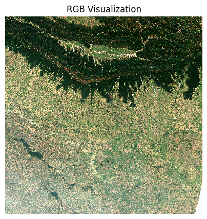
Exercise
The items variable contains a list of STAC Items
returned by the query. The code below iterates through each item and
print its metadata stored in the properties. Extract the
Sentinel-2 Product ID stored in s2:product_uri peroperty
and print a list of all image ids returned by the query.
1.3 DuckDB Basics

Overview
In this section, we will explore cloud-native vector datasets and use DuckDB to query and load data directly from cloud.
Overview of the Task
We will query and load an Administrative Boundaries dataset provided by FieldMaps as a cloud-native GeoParquet file. We will interactively query and save the required boudary polygon for our analysis.
data_folder = 'data'
output_folder = 'output'
if not os.path.exists(data_folder):
os.mkdir(data_folder)
if not os.path.exists(output_folder):
os.mkdir(output_folder)If you are running this notebook in Colab, you will need to create and use a proxy URL to see the dashboard running on the local server.
DuckDB
DuckDb is a modern high-performance database engine that allows querying large files easily. It has built-in support for spatial data and can be used to query large remote spatial files without downloading it first.
We initialize DuckDB and enable the spatial extension.
Query Remote Dataset
FieldMaps provides open
datasets of global administrative boundaries from multiple providers. We
will query the Admin2 boundaries from GeoBoundaries in the GeoParquet
format. The souce data is a 2 GB .parquet file containing
48000+ polygons. Instead of downloading this, we can query it and
extract just the subset we require.
DuckDB supports standard SQL syntax for querying. Let’s check some basic information about the dataset.
query = f'''
SELECT COUNT(*) FROM read_parquet('{parquet_url}')
'''
result = con.sql(query).fetchone()
print('Total Features', result)We can use DESCRIBE clause to get the available columns.
We can turn the results of any query to a DataFrame using the
.df().
query = f'''
DESCRIBE SELECT * FROM read_parquet('{parquet_url}')
'''
columns = con.sql(query).df()
columnsWe can now form a query to find all all Admin1 names
(States/Provinces) in a specific country. We will use this in the next
step to fetch all Admin2 regions within a specific Admin1 area. The
adm0_src uses the 3-digit ISO
code for each country.
country = 'USA'
query = f'''
SELECT DISTINCT adm1_name
FROM read_parquet('{parquet_url}')
WHERE adm0_src = '{country}'
ORDER BY adm1_name
'''
admin1_df = con.sql(query).df()
admin1_dfNotice that the dataset has a geometry column which
stores the layer geometry. We can now query for all Admin2 polygons
within our chosen Admin1 region. Also since Parquet is a columnar
format, so it is efficient to fetch only the required columns.
adm1_name = 'California'
query = f'''
SELECT adm1_name, adm1_id, adm2_name, adm2_id, ST_AsText(geometry) AS geometry
FROM read_parquet('{parquet_url}')
WHERE
adm0_src = '{country}' and
adm1_name = '{adm1_name}'
'''
admin2_df = con.sql(query).df()We turn the results into a GeoPandas GeoDataFrame by specifying the geometry column and the CRS.
admin2_gdf = gpd.GeoDataFrame(
admin2_df, geometry=gpd.GeoSeries.from_wkt(admin2_df.geometry), crs='EPSG:4326'
)
admin2_gdfWe can visualize the Admin2 polygons.
m = leafmap.Map(width=800, height=500)
m.add_gdf(admin2_gdf, layer_name='Admin2', style={'color':'blue', 'weight':0.5})
m.zoom_to_gdf(admin2_gdf)
mSelect a single Admin2 region and extract the geometry.
Save the Results
We can save the selected subset as a GeoPackage. Rather than saving it to the temporary machine where Colab is running, we can save it to our own Google Drive. This will ensure the image will be available to us even after existing Google Colab.
Run the following cell to authenticate and mount the Google Drive.
if 'google.colab' in str(get_ipython()):
from google.colab import drive
drive.mount('/content/drive')if 'google.colab' in str(get_ipython()):
drive_folder_root = 'MyDrive'
output_folder = 'data'
output_folder_path = os.path.join(
'/content/drive', drive_folder_root, output_folder)
# Check if Google Drive is mounted
if not os.path.exists('/content/drive'):
print('Google Drive is not mounted. Please run the cell above to mount your drive.')
else:
if not os.path.exists(output_folder_path):
os.makedirs(output_folder_path)
else:
# Use the local folder
output_folder_path = output_folderExercise
Overture Maps provides free and open map data curated from sources like OpenStreetMap. The entire dataset is available in cloud-native GeoParquet format. We can use it to query and extract city municipal boundary for any city.
Search for your city/region of interest using Overture Explorer and replace the name, country and region with your own area of interest.
Tips:
- Cities are not uniformly represented across the world. Some cities
are tagged as locality while others with county or
localadmin. The SQL query below tries to capture all the
variations, but if you get no matches, you can relax the query by
commenting out some lines by prefixing it with
--.- Comment the line with
region = '{region}'to search other regions in the country. - By default the boundary tagged as
localitywill be picked. To see other options comment the line starting withLIMIT 1.
- Comment the line with
# Overture does monthly releases of their dataset
# Find the latest release at https://stac.overturemaps.org/
OVERTURE_RELEASE = '2026-04-15.0'
s3_path = (
f's3://overturemaps-us-west-2/release/{OVERTURE_RELEASE}/'
'theme=divisions/type=division_area/*'
)
query = f'''
SELECT
id,
names.primary AS name,
subtype,
country,
region,
ST_AsText(geometry) AS geometry
FROM read_parquet(
'{s3_path}',
filename=true,
hive_partitioning=1
)
WHERE subtype in ('locality', 'county', 'localadmin', 'region') AND
country = '{country_iso2}' AND
region = '{region}' AND
names.primary ILIKE '{city_name}'
AND is_land = true -- exclude maritime extensions
ORDER BY
-- prefer 'locality' over other types
CASE subtype WHEN 'locality' THEN 0 ELSE 1 END
LIMIT 1
'''
results = con.sql(query).df()
resultsView the resulting boundary.
1.4 Creating a Median Composite

Overview
We are now ready to perform a large computation to create a median composite image for a city using XArray and Dask, leveraging STAC and DuckDB for querying cloud-hosted data sources.
Overview of the Task
We will query the Overture Maps catalog for the boundary for the city of Bengaluru, India, use it to query a STAC catalog for Sentinel-2 imagery for a chosen period and then use XArray and Dask to create a median composite image using distributed processing.
Setup
%%capture
if 'google.colab' in str(get_ipython()):
!pip install pystac-client odc-stac rioxarray dask['distributed']import duckdb
import geopandas as gpd
import matplotlib.pyplot as plt
import os
import pystac_client
import rioxarray as rxr
import xarray as xr
from odc.stac import stac_loaddata_folder = 'data'
output_folder = 'output'
if not os.path.exists(data_folder):
os.mkdir(data_folder)
if not os.path.exists(output_folder):
os.mkdir(output_folder)Setup a local Dask cluster. This distributes the computation across multiple workers on your computer.
If you are running this notebook in Colab, you will need to create and use a proxy URL to see the dashboard running on the local server.
Search and Load City Boundary
Read the file containing the city boundary.
We initialize DuckDB and enable the spatial extension.
# Overture does monthly releases of their dataset
# Find the latest release at https://stac.overturemaps.org/
OVERTURE_RELEASE = '2026-04-15.0'
s3_path = (
f's3://overturemaps-us-west-2/release/{OVERTURE_RELEASE}/'
'theme=divisions/type=division_area/*'
)
query = f'''
SELECT
id,
names.primary AS name,
subtype,
country,
region,
ST_AsText(geometry) AS geometry
FROM read_parquet(
'{s3_path}',
filename=true,
hive_partitioning=1
)
WHERE subtype in ('locality', 'county', 'localadmin', 'region') AND
country = '{country_iso2}' AND
region = '{region}' AND
names.primary ILIKE '{city_name}'
AND is_land = true -- exclude maritime extensions
ORDER BY
-- prefer 'locality' over other types
CASE subtype WHEN 'locality' THEN 0 ELSE 1 END
LIMIT 1
'''
results = con.sql(query).df()
resultsSearch and Load Sentinel-2 Imagery
Let’s use Element84 search endpoint to look for items from the
sentinel-2-c1-l2a collection on AWS. We search for the
imagery collected within the date range and intersecting the AOI
geometry.
We also specify additonal filters to select scenes based on metadata.
The parameter eo:cloud_cover contains the overall cloud
percentage and we use it to select imagery with < 30% overall cloud
cover.
catalog = pystac_client.Client.open(
'https://earth-search.aws.element84.com/v1')
# Search for images for the year
year = 2024
time_range = f'{year}'
# Optionally, we can specify a range of months
# start_month = 4
# end_month = 6
# time_range = f'{year}-{start_month:02d}/{year}-{end_month:02d}'
filters = {
'eo:cloud_cover': {'lt': 30},
}
search = catalog.search(
collections=['sentinel-2-c1-l2a'],
intersects=geometry,
datetime=time_range,
query=filters,
)
items = search.item_collection()
len(items)Visualize the resulting image footprints. You can see that our AOI covers only a small part of a single scene. When we process the data for our AOI - we will only stream the required pixels to create the composite instead of downloading entire scenes.
items_gdf = gpd.GeoDataFrame.from_features(items.to_dict(), crs='EPSG:4326')
fig, ax = plt.subplots(1, 1)
fig.set_size_inches(5,5)
items_gdf.plot(
ax=ax,
facecolor='none',
edgecolor='black',
alpha=0.5)
city_gdf.plot(
ax=ax,
facecolor='blue',
alpha=0.5
)
ax.set_axis_off()
ax.set_title('STAC Query Results')
plt.show()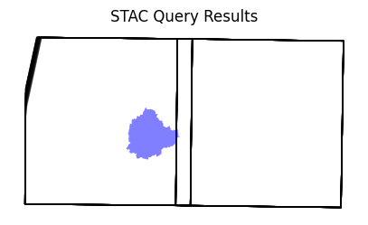
Load the matching images as a XArray Dataset.
ds = stac_load(
items,
bands=['red', 'green', 'blue'],
resolution=10,
bbox=geometry.bounds,
chunks={}, # <-- use Dask
groupby='solar_day',
)
dsThe Sentinel-2 scenes come with NoData value of 0. So we set the correct NoData value before further processing.
Apply scale and offset to all spectral bands
# Apply scale/offset
scale = 0.0001
offset = -0.1
# Select spectral bands (all except 'scl')
data_bands = [band for band in ds.data_vars if band != 'scl']
for band in data_bands:
ds[band] = ds[band] * scale + offsetConvert the Dataset it to a DataArray using the
to_array() method. All the variables will be converted to a
new dimension. Since our variables are image bands, we give the name of
the new dimesion as band.
Create a Median Composite
A very-powerful feature of XArray is the ability to easily aggregate data across dimensions - making it ideal for many remote sensing analysis. Let’s create a median composite from all the individual images.
We apply the .median() aggregation across the time
dimension.
So far all the operations that we have created a computation graph.
To run this computation using the local Dask cluster, we must call
.compute().
Visualizing and Exporting the Results
The composite is creating from all the pixels within the bounding box
of the geometry. We can use rioxarray to clip the image to
the city boundary to remove pixels outside the polygon.
image_crs = rgb_composite.rio.crs
city_gdf_reprojected = city_gdf.to_crs(image_crs)
rgb_composite_clipped = rgb_composite.rio.clip(city_gdf_reprojected.geometry)Plot the results.
preview = rgb_composite_clipped.rio.reproject(
rgb_composite_clipped.rio.crs, resolution=100
)
fig, ax = plt.subplots(1, 1)
fig.set_size_inches(5,5)
preview.sel(band=['red', 'green', 'blue']).plot.imshow(
ax=ax,
robust=True)
ax.set_title(f'Sentinel-2 Composite {year}')
ax.set_axis_off()
ax.set_aspect('equal')
plt.show()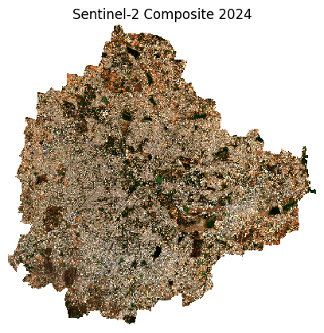
We finally save the results as a local Cloud-Optimized GeoTIFF file.
Rather than saving it to the temporary machine where Colab is running, we can save it to our own Google Drive. This will ensure the image will be available to us even after existing Google Colab.
Run the following cell to authenticate and mount the Google Drive.
if 'google.colab' in str(get_ipython()):
from google.colab import drive
drive.mount('/content/drive')if 'google.colab' in str(get_ipython()):
drive_folder_root = 'MyDrive'
output_folder = 'data'
output_folder_path = os.path.join(
'/content/drive', drive_folder_root, output_folder)
# Check if Google Drive is mounted
if not os.path.exists('/content/drive'):
print("Google Drive is not mounted. Please run the cell above to mount your drive.")
else:
if not os.path.exists(output_folder_path):
os.makedirs(output_folder_path)
else:
# Use the local folder
output_folder_path = output_folderModule 2: Remote Sensing Fundamentals
2.1 Calculating Spectral Indices

Overview
Spectral indices are core to many remote sensing analysis. In this section, we will learn how can we perform calculations using XArray.
We will take a single Sentinel-2 scene and calculate spectral indices like NDVI, MNDWI and SAVI.
Setup and Data Download
The following blocks of code will install the required packages and download the datasets to your Colab environment.
%%capture
if 'google.colab' in str(get_ipython()):
!pip install pystac-client odc-stac rioxarray dask['distributed'] jupyter-server-proxyimport matplotlib.pyplot as plt
import os
import pandas as pd
import pystac_client
import rioxarray as rxr
import xarray as xr
from odc import stacIf you are running this notebook in Colab, you will need to create and use a proxy URL to see the dashboard running on the local server.
Get a Sentinel-2 Scene
We define a location and time of interest to get some satellite imagery.
# Define a small bounding box around the chosen point
km2deg = 1.0 / 111
x, y = (longitude, latitude)
r = 1 * km2deg # radius in degrees
bbox = (x - r, y - r, x + r, y + r)Search the catalog for matching items.
# Query the STAC Catalog
catalog = pystac_client.Client.open(
'https://earth-search.aws.element84.com/v1')
search = catalog.search(
collections=['sentinel-2-c1-l2a'],
bbox=bbox,
datetime=f'{year}',
query={'eo:cloud_cover': {'lt': 30}, 's2:nodata_pixel_percentage': {'lt': 10}},
sortby=[{'field': 'properties.eo:cloud_cover', 'direction': 'asc'}]
)
items = search.item_collection()
# Load to XArray
ds = stac.load(
items,
bands=['red', 'green', 'blue', 'nir', 'swir16'],
resolution=10,
crs='utm',
chunks={}, # <-- use Dask
groupby='solar_day',
preserve_original_order=True
)
# Select the first scene
timestamp = pd.to_datetime(items[0].properties['datetime']).tz_convert(None)
scene = ds.sel(time=timestamp)
# Mask nodata values
scene = scene.where(scene != 0)
# Apply scale/offset
scale = 0.0001
offset = -0.1
scene = scene*scale + offsetVisualize the Scene
To visualize our Dataset, we first convert it to a DataArray using
the to_array() method. All the variables will be converted
to a new dimension. Since our variables are image bands, we give the
name of the new dimesion as band.
Rather than loading the entire scene into memory, we resample it to a lower resolution preview and render it.
preview = scene_da.rio.reproject(
scene.rio.crs, resolution=300
)
fig, ax = plt.subplots(1, 1)
fig.set_size_inches(5,5)
preview.sel(band=['red', 'green', 'blue']).plot.imshow(
ax=ax,
robust=True)
ax.set_title('RGB Visualization')
ax.set_axis_off()
ax.set_aspect('equal')
plt.show()We can also view a False Color Composite (FCC) with a different combination of spectral bands.
fig, ax = plt.subplots(1, 1)
fig.set_size_inches(5,5)
preview.sel(band=['nir', 'red', 'green']).plot.imshow(
ax=ax,
robust=True)
ax.set_title('NRG Visualization')
ax.set_axis_off()
plt.show()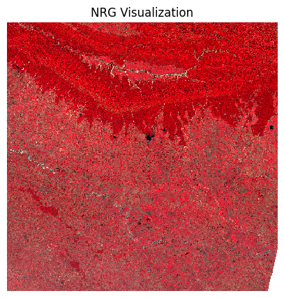
Calculate Spectral Indices
The Normalized Difference Vegetation Index (NDVI) is calculated using the following formula:
NDVI = (NIR - Red)/(NIR + Red)
Where: * NIR = Near-Infrared band reflectance * Red = Red band reflectance
Let’s visualize the results.
ndvi_preview = ndvi.rio.reproject(
ndvi.rio.crs, resolution=300
)
cbar_kwargs = {
'orientation':'horizontal',
'fraction': 0.025,
'pad': 0.05,
'extend':'neither'
}
fig, ax = plt.subplots(1, 1)
fig.set_size_inches(5,5)
ndvi_preview.plot.imshow(
ax=ax,
cmap='Greens',
robust=True,
cbar_kwargs=cbar_kwargs)
ax.set_title('NDVI')
ax.set_axis_off()
plt.show()
The Modified Normalized Difference Water Index (MNDWI) is calculated using the following formula:
MNDWI = (Green - SWIR1)/(Green + SWIR1)
Where: * Green = Green band reflectance * SWIR1 = Short-wave infrared band 1 reflectance
green = scene_da.sel(band='green')
swir16 = scene_da.sel(band='swir16')
mndwi = (green - swir16)/(green + swir16)The Soil Adjusted Vegetation Index (SAVI) is calculated using the following formula:
SAVI = (1 + L) * ((NIR - Red)/(NIR + Red + L))
Where: * NIR = Near-Infrared band reflectance * Red = Red band reflectance * L = Soil brightness correction factor (typically 0.5 for moderate vegetation)
Save the Computed Indices
Rather than saving it to the temporary machine where Colab is running, we can save it to our own Google Drive. This will ensure the image will be available to us even after existing Google Colab.
Run the following cell to authenticate and mount the Google Drive.
drive_folder_root = 'MyDrive'
output_folder = 'data'
output_folder_path = os.path.join(
'/content/drive', drive_folder_root, output_folder)
# Check if Google Drive is mounted
if not os.path.exists('/content/drive'):
print("Google Drive is not mounted. Please run the cell above to mount your drive.")
else:
if not os.path.exists(output_folder_path):
os.makedirs(output_folder_path)Exercise
Apply a threshold to the NDVI values to create a binary raster.
Hint: Use the xarray.where
function that allows you to set both matching and non-matching
values.
2.2 Masking Clouds

Overview
When working with optical satellite imagery, we need to ensure the cloudy-pixels are removed from analysis. Most providers supply QA bands detailing locations of cloudy pixels. There are also third-party cloud-masking packages that can be used to locate and mask cloudy pixels.
In this section, we will use the Scene Classification (SCL) band supplied with Sentinel-2 Level-2A images to remove clouds and cloud-shadows from a scene.
Setup and Data Download
The following blocks of code will install the required packages and download the datasets to your Colab environment.
%%capture
if 'google.colab' in str(get_ipython()):
!pip install pystac-client odc-stac rioxarray dask['distributed'] jupyter-server-proxyimport matplotlib.pyplot as plt
import os
import pandas as pd
import pystac_client
import rioxarray as rxr
import xarray as xr
from matplotlib.colors import ListedColormap
from odc import stacIf you are running this notebook in Colab, you will need to create and use a proxy URL to see the dashboard running on the local server.
Get a Sentinel-2 Scene
We define a location and time of interest to get some satellite imagery.
# Define a small bounding box around the chosen point
km2deg = 1.0 / 111
x, y = (longitude, latitude)
r = 1 * km2deg # radius in degrees
bbox = (x - r, y - r, x + r, y + r)Search the catalog for matching items. This time we use
'direction': 'desc' in the sortby parameter to
get results where the first scene has the highest cloud-cover.
# Query the STAC Catalog
catalog = pystac_client.Client.open(
'https://earth-search.aws.element84.com/v1')
search = catalog.search(
collections=['sentinel-2-c1-l2a'],
bbox=bbox,
datetime=f'{year}',
query={
'eo:cloud_cover': {'lt': 50},
's2:nodata_pixel_percentage': {'lt': 10}},
sortby=[
{'field': 'properties.eo:cloud_cover',
'direction': 'desc'}
]
)
items = search.item_collection()
# Load to XArray
ds = stac.load(
items,
bands=['red', 'green', 'blue', 'scl'],
resolution=10,
crs='utm',
chunks={}, # <-- use Dask
groupby='solar_day',
preserve_original_order=True
)
# Select the first scene
timestamp = pd.to_datetime(items[0].properties['datetime']).tz_convert(None)
scene = ds.sel(time=timestamp)
# Mask nodata values
scene = scene.where(scene != 0)
# Apply scale/offset
scale = 0.0001
offset = -0.1
# Select spectral bands (all except 'scl')
data_bands = [band for band in scene.data_vars if band != 'scl']
for band in data_bands:
scene[band] = scene[band] * scale + offsetVisualize the Scene
The clouds will have a much higher reflectance, so
robust=True will not give us appropriate visualization. We
supply hardcoded min/max values as 0 and 0.3 which is the normal range
of reflectance values of earth targets.
scene_da = scene.to_array('band')
preview = scene_da.rio.reproject(
scene_da.rio.crs, resolution=300
)
fig, ax = plt.subplots(1, 1)
fig.set_size_inches(5,5)
preview.sel(band=['red', 'green', 'blue']).plot.imshow(
ax=ax,
vmin=0, vmax=0.3)
ax.set_title('RGB Visualization')
ax.set_axis_off()
ax.set_aspect('equal')
plt.show()
Create a Cloud Mask
The Scene Classification (SCL) band has each pixel classified into one of the following classes.
| Value | Description |
|---|---|
| 0 | No Data |
| 1 | Saturated or defective pixel |
| 2 | Dark area pixels |
| 3 | Cloud shadows |
| 4 | Vegetation |
| 5 | Not vegetated |
| 6 | Water |
| 7 | Clouds Low Probability / Unclassified |
| 8 | Cloud medium probability |
| 9 | Cloud high probability |
| 10 | Thin cirrus |
| 11 | Snow / Ice |
We select the types of pixels we want to mask. Let’s create a mask
that will remove all pixels marked Cloud shadows (3),
Cloud Medium Probability (8),
Cloud High Probability (9) and
Thin Cirrus (10).
Visualize the mask by overlaying it on the scene.
mask_preview = mask.astype('uint8').rio.reproject(
mask.rio.crs, resolution=300
)
fig, (ax0, ax1) = plt.subplots(1, 2)
fig.set_size_inches(10,5)
preview.sel(band=['red', 'green', 'blue']).plot.imshow(
ax=ax0,
vmin=0, vmax=0.3)
ax0.set_title('RGB Visualization')
# RGBA: Transparent, Red
mask_colormap = ListedColormap(['#00000000', '#FF0000FF'])
mask_preview.plot.imshow(
ax=ax1,
cmap=mask_colormap,
add_colorbar=False)
ax1.set_title('Cloud Mask')
for ax in (ax0, ax1):
ax.set_axis_off()
ax.set_aspect('equal')
plt.show()
Once we are satisfied that the mask looks good, we go ahead and apply the mask on the scene.
Exercise
Save the masked scene to disk. The code snippet below mounts your
Google Drive and creates a data folder. Save the
scene_masked to the data folder.
Hint: You will need to convert the scene_masked to a
DataArray before saving it.
drive_folder_root = 'MyDrive'
output_folder = 'data'
output_folder_path = os.path.join(
'/content/drive', drive_folder_root, output_folder)
# Check if Google Drive is mounted
if not os.path.exists('/content/drive'):
print("Google Drive is not mounted. Please run the cell above to mount your drive.")
else:
if not os.path.exists(output_folder_path):
os.makedirs(output_folder_path)2.3 Extracting and Processing Time-Series

Overview
We are now ready to scale our analysis. Having learned how to calculate spectral indices and do cloud masking for a single scene - we can easily apply these operations to the entire data-cube and extract the results at at one or more locations. Cloud-optimized data formats and Dask ensure that we fetch and process only a small amount of data that is required to compute the results at the pixels of interest.
In this section, we will get all Sentinel-2 scenes collected over our region of interest, apply a cloud-mask, calculate NDVI and extract a time-series of NDVI at a single location. We will also use XArray’s built-in time-series processing functions to interpolat and smooth the results.
Setup and Data Download
The following blocks of code will install the required packages and download the datasets to your Colab environment.
%%capture
if 'google.colab' in str(get_ipython()):
!pip install pystac-client odc-stac rioxarray \
dask['distributed'] jupyter-server-proxy xrscipyimport matplotlib.dates as mdates
import matplotlib.pyplot as plt
import numpy as np
import os
import pyproj
import pystac_client
import rioxarray as rxr
import xarray as xr
import xrscipy.signal as xrs
from odc import stacIf you are running this notebook in Colab, you will need to create and use a proxy URL to see the dashboard running on the local server.
Get Satellite Imagery using STAC API
We define a location and time of interest to get some satellite imagery.
# Define a small bounding box around the chosen point
km2deg = 1.0 / 111
x, y = (longitude, latitude)
r = 1 * km2deg # radius in degrees
bbox = (x - r, y - r, x + r, y + r)Let’s use Element84 search endpoint to look for items from the sentinel-2-l2a collection on AWS and load the matching images as a XArray Dataset.
# Query the STAC Catalog
catalog = pystac_client.Client.open(
'https://earth-search.aws.element84.com/v1')
search = catalog.search(
collections=['sentinel-2-c1-l2a'],
bbox=bbox,
datetime=f'{year}',
query={
'eo:cloud_cover': {'lt': 30},
}
)
items = search.item_collection()
# Load to XArray
ds = stac.load(
items,
bands=['red', 'green', 'blue', 'nir', 'scl'],
bbox=bbox, # <-- load data only for the bbox
resolution=10,
crs='utm',
chunks={}, # <-- use Dask
groupby='solar_day',
preserve_original_order=True
)
dsProcessing Data
We have a data cube of multiple scenes collected through the year. As XArray supports vectorized operations, we can work with the entire DataSet the same way we would process a single scene.
The Sentinel-2 scenes come with NoData value of 0. So we set the correct NoData value before further processing.
Apply scale and offset to all spectral bands
# Apply scale/offset
scale = 0.0001
offset = -0.1
# Select spectral bands (all except 'scl')
data_bands = [band for band in ds.data_vars if band != 'scl']
for band in data_bands:
ds[band] = ds[band] * scale + offsetApply the cloud mask
Calculate NDVI and add it as a data variable.
Extracting Time-Series
We have a dataset with cloud-masked NDVI values at each pixel of each scene. Remember that none of these values are computed yet. Dask has a graph of all the operations that would be required to calculate the results.
We can now query this results for values at our chosen location. Once
we run compute() - Dask will fetch the required tiles from
the source data and run the operations to give us the results.
Our location coordinates are in EPSG:4326 Lat/Lon. Convert it to the CRS of the dataset so we can query it.
crs = ds.rio.crs
transformer = pyproj.Transformer.from_crs('EPSG:4326', crs, always_xy=True)
x, y = transformer.transform(longitude, latitude)
x,yQuery NDVI values at the coordinates.
Run the calculation and load the results into memory.
Plot the time-series.
fig, ax = plt.subplots(1, 1)
fig.set_size_inches(15, 7)
time_series.plot.line(
ax=ax, x='time',
marker='o', color='#238b45',
linestyle='-', linewidth=1, markersize=4)
# Format the x-axis to display dates as YYYY-MM
ax.xaxis.set_major_formatter(mdates.DateFormatter('%Y-%m'))
ax.xaxis.set_major_locator(mdates.MonthLocator(interval=2))
ax.set_title('NDVI Time-Series')
plt.show()Interpolate and Smooth the time-series
We use XArray’s excellent time-series processing functionality to smooth the time-series and remove noise.
# As we are proceesing the time-series,
# it needs to be in a single chunk along the time dimension
time_series = time_series.chunk(dict(time=-1))First, we resample the time-series to have a value every 5-days and fill the missing values with linear interpolation. Then we apply a moving-window smoothing to remove noise.
time_series_resampled = time_series\
.resample(time='5d').mean(dim='time').chunk(dict(time=-1))
time_series_interpolated = time_series_resampled \
.interpolate_na('time', use_coordinate=False)
time_series_smoothed = time_series_interpolated \
.rolling(time=3, min_periods=1, center=True).mean()fig, ax = plt.subplots(1, 1)
fig.set_size_inches(15, 7)
time_series.plot.line(
ax=ax, x='time',
marker='^', color='#66c2a4',
linestyle='--', linewidth=1, markersize=2)
time_series_smoothed.plot.line(
ax=ax, x='time',
marker='o', color='#238b45',
linestyle='-', linewidth=1, markersize=4)
# Format the x-axis to display dates as YYYY-MM
ax.xaxis.set_major_formatter(mdates.DateFormatter('%Y-%m'))
ax.xaxis.set_major_locator(mdates.MonthLocator(interval=2))
ax.set_title('Original vs. Smoothed NDVI Time-Series')
plt.show()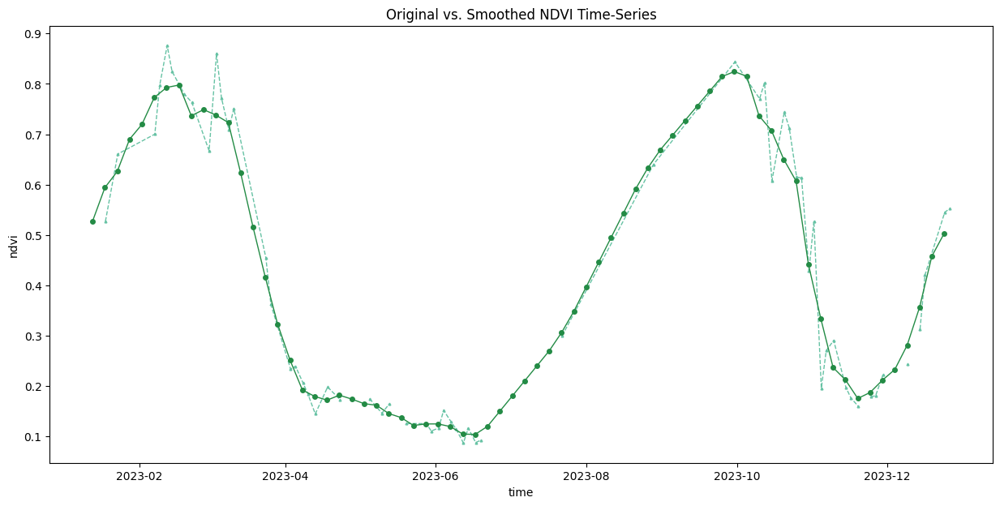
Save the Time-Series.
Convert the extracted time-series to a Pandas DataFrame.
Save the DataFrame as a CSV file.
Exercise
Scipy
for Xarray (xrscipy) package wraps the popular scipy
package for Xarray and provides many useful time-series processing
functions. The code snippet below uses xrscipy.signal.savgol_filter
function to apply a Savitzky-Golay filter on our gap-filled NDVI
time-series.
Try SG-Filter with different values of window_length and polyorder and plot the results on a chart.
# Use the equally spaced interpolated time-series
time_series_interpolated = time_series_interpolated.compute()
# savgol_filter() requires integers as time index
# We save the original time index values and
# overwrite it with sequential integers
timestamps = time_series_interpolated.time
time_series_interpolated.coords['time'] = np.arange(len(timestamps))
# Apply the SG filter
window_length = 5 # Size of filter window
polyorder = 2 # Order of the polynomial used in the filtering
time_series_sg = xrs.savgol_filter(
time_series_interpolated,
window_length = window_length,
polyorder = polyorder,
mode='nearest',
dim = 'time'
)
# Write back the original timestamps
time_series_sg.coords['time'] = timestamps
time_series_interpolated.coords['time'] = timestampsModule 3: Computation and Data Processing
3.1 Calculating Area

Overview
We will learn how to work with landcover data and calculate area of
different landcover classes in a region. This section also shows how you
can scale your analysis to large regions without running into memory
limits using dask.
Setup and Data Download
The following blocks of code will install the required packages and download the datasets to your Colab environment.
%%capture
if 'google.colab' in str(get_ipython()):
!pip install pystac-client odc-stac rioxarray dask[distributed] \
jupyter-server-proxy planetary_computerimport dask.array as da
import geopandas as gpd
import matplotlib.colors
import matplotlib.pyplot as plt
import numpy as np
import os
import pandas as pd
import planetary_computer as pc
import pyproj
import pystac_client
import rioxarray as rxr
import xarray as xr
from matplotlib import cm
from odc import stacIf you are running this notebook in Colab, you will need to create and use a proxy URL to see the dashboard running on the local server.
Define a Region of Interest
We define a location and choose a circular buffer area as our region of interest.
Create a GeoDataFrame. This helps us easily convert between CRSs, extract bounds etc.
point_gdf = gpd.GeoDataFrame(
data = {'name': ['aoi']},
geometry=gpd.points_from_xy([longitude], [latitude]),
crs='EPSG:4326')
point_gdfTo create an accurate buffer, we must first convert the coordinates
into a projected CRS. UTM is a good choice for a projected CRS that
offers high accuracy with minimal distortions. We can automatically find
the appropropriate UTM Zone for the chosen location using
pyproj.
# Small bounding box around the chosen coordinates
bbox = (longitude - 0.001, latitude - 0.0001,
longitude + 0.001, latitude + 0.0001)
aoi = pyproj.aoi.AreaOfInterest(*bbox)
# Query for matching UTM CRS
utm_crs_list = pyproj.database.query_utm_crs_info(
datum_name='WGS 84',
area_of_interest=aoi,
)
utm_crs = pyproj.CRS.from_epsg(utm_crs_list[0].code)
print(f'Selected CRS {utm_crs.name}')Buffer the point.
Get ESA WorldCover Data
Let’s use Planetary Computer STAC API search endpoint to look for items from the ESA WorldCover collection on Azure Blob Storage.
ESA WorldCover has data for year 2020 and 2021. We will use the 2021 data.
catalog = pystac_client.Client.open(
'https://planetarycomputer.microsoft.com/api/stac/v1')
# STAC search requires bounding box in EPSG:4326
bounds = buffered.to_crs('EPSG:4326').total_bounds
search = catalog.search(
collections=['esa-worldcover'],
bbox=bounds,
datetime=f'2021',
)
items = search.item_collection()
itemsEach STAC item has metadata containing information about the class names, legend colors and pixel values. Let’s extract it so we can use it later to contruct a meaningful legend.
class_list = items[0].assets['map'].extra_fields['classification:classes']
class_dict = {
c['value']: {'description': c['description'], 'hex': c['color_hint']}
for c in class_list
}
class_dictLoad the matching images as a XArray Dataset. Accessing data from
Planetary Computer is free but requires getting a Shared Access
Signature (SAS) token and sign the URLs. The
planetary_computer Python package provides a simple
mechanism for signing the URLs using sign() function.
# Load to XArray
ds = stac.load(
items,
bbox=bounds, # <-- load data only for the bbox
resolution=10,
crs=utm_crs,
chunks={}, # <-- use Dask
patch_url=pc.sign,
groupby='solar_day',
preserve_original_order=True
)
dsThe landcover classification data is in the map
variable. Select it and remove the empty time
dimension.
Clip the data to the buffered region.
Visualize the Landcover
To create a meaningful legend, we use the class names and colors from
the class_dict created earlier.
colors = ['#000000' for r in range(256)]
for key, value in class_dict.items():
colors[int(key)] = f'#{value['hex']}'
# Set color for value 0 to transparent
colors[0] = (0, 0, 0, 0)
cmap = matplotlib.colors.ListedColormap(colors)
# Data range is 8-bit (0-255)
normalizer = matplotlib.colors.Normalize(vmin=0, vmax=255)
# Set tick labels
values = [key for key in class_dict]
boundaries = [(values[i + 1] + values[i]) / 2 for i in range(len(values) - 1)]
boundaries = [0] + boundaries + [255]
ticks = [
(boundaries[i + 1] + boundaries[i]) / 2
for i in range(len(boundaries) - 1)
]
tick_labels = [
f'{value['description']} ({key})'
for key, value in class_dict.items()
]
tick_labelsfig, ax = plt.subplots(1, 1)
fig.set_size_inches(12, 10)
map_data_clipped.plot(
ax=ax, cmap=cmap, norm=normalizer
)
colorbar = fig.colorbar(
cm.ScalarMappable(norm=normalizer, cmap=cmap),
boundaries=boundaries,
values=values,
cax=fig.axes[1].axes,
)
colorbar.set_ticks(ticks, labels=tick_labels)
ax.set_axis_off()
ax.set_title('Landcover Classes from ESA WorldCover');Calculate Area
We can now calculate are of each class in our region of interest. As our data is in a projected CRS, each pixel’s area is fixed. We can count the total number of pixels for each class and multiply it by the area of a single pixel to get the area.
Let’s get the underlying array of pixel values.
To efficiently get the pixel counts of all unique pixel values in the
data, we can use histogram() function provided by NumPy.
The function takes an array of values and returns counts of each pixel
value. We need to specify the bins to be used. Since we need counts for
each class, we can use the class values as bins.
# Get unique class values to define histogram bins
unique_classes = sorted(class_dict.keys())
# right edge for last bin
bins = unique_classes + [unique_classes[-1] + 1]
counts, _ = np.histogram(data, bins=bins)
countsWe now have pixel counts of each class. We multiply it by the area of each pixel to get the area. We can also filter out pixels with value 0 (nodata pixels) and counts 0 (not present in the region) to get a clean table.
pixel_area_m2 = 100.0
area_df = pd.DataFrame({
'class_value': unique_classes,
'area_m2': counts * pixel_area_m2,
})
area_df['class_name'] = area_df['class_value'].map(
lambda x: class_dict[x]['description'])
# Drop nodata class (0) and classes with no pixels
area_df = area_df[
(area_df['class_value'] != 0) & (area_df['area_m2'] > 0)]
area_dfSave the results as a CSV file.
Calculating Area for Large Regions
Our previous approach required loading the entire array of landcover
classes in the memory using .values. If our dataset is very
large, this will cause us to run out of memory and result in a crash. We
can instead use dask to chunk the data which lazily loads
each chunk into memory only when processing it.
Let’s read a shapefile for the boundary of a larse state in India.
state_filepath = ('https://storage.googleapis.com/spatialthoughts-public-data/' +
'kgis/karnataka.zip')
state = gpd.read_file(state_filepath)
stateAutomatically select a suitable UTM projection.
bbox = state.geometry.total_bounds
aoi = pyproj.aoi.AreaOfInterest(*bbox)
# Query for matching UTM CRS
utm_crs_list = pyproj.database.query_utm_crs_info(
datum_name='WGS 84',
area_of_interest=aoi,
)
utm_crs = pyproj.CRS.from_epsg(utm_crs_list[0].code)
print(f'Selected CRS {utm_crs.name}')We update the code from earlier to now specify a large buffer
distance for the region of interest and explicitely specify a chunk size
of 5000 x 5000 - which is small enough to fit into
memory.
catalog = pystac_client.Client.open(
'https://planetarycomputer.microsoft.com/api/stac/v1')
# STAC search requires bounding box in EPSG:4326
bounds = state.geometry.total_bounds
search = catalog.search(
collections=['esa-worldcover'],
bbox=bounds,
datetime=f'2021',
)
items = search.item_collection()
ds = stac.load(
items,
bbox=bounds, # <-- load data only for the bbox
resolution=10,
crs=utm_crs,
chunks={'x':5000, 'y':5000}, # <-- use Dask
patch_url=pc.sign,
groupby='solar_day',
preserve_original_order=True
)
map_data = ds['map'].squeeze()
map_dataWe get the data as a Dask Array using .data. This does
not trigger any computation.
dask_array = map_data.data
large_area_counts, _ = da.histogram(dask_array, bins=bins)
large_area_countsNow we call .compute() to start the computation which
uses distributed computing to process each chunk in parallel using all
available resources.
We can now process the results into a nice table. Here we divide the
area by 1e6 to get the results in sq. km..
pixel_area_m2 = 100.0
large_area_df = pd.DataFrame({
'class_value': unique_classes,
'area_km2': large_area_counts * pixel_area_m2 / 1e6,
})
large_area_df['class_name'] = large_area_df['class_value'].map(
lambda x: class_dict[x]['description'])
# Drop nodata class (0) and classes with no pixels
large_area_df = large_area_df[
(area_df['class_value'] != 0) & (large_area_df['area_km2'] > 0)]
large_area_dfSave the results as a CSV file.
Exercise
- Upload a vector layer (shapefile, GeoPackage, GeoJSON etc.) of your area of interest.
- Calculate area of all landcover classes.
Tip: If you do not have a data layer handy, you may use geojson.io to draw a shape and Export it as a GeoJSON.
Module 4: Machine Learning and AI
Module 5: Scaling Analysis
Scaling Analysis with Coiled
Coiled is a platform that allows you to easily setup cloud infrastructure for distributed processing. It provides a Python-package and a Notebook service that makes it very easy to scale your Xarray + Dask workflows to process large volumes of data. In this section, you will learn how to setup coiled and run a notebook in a cloud-hosted machine for creating a median cloud-free annual composite from Sentinel-2 imagery.
Installation and Setting up the Environment
You need to install the coiled along with other required
packages in your local Python environment and configure your account.
Visit the Coiled
Documentation for detailed setup instructions.
Create an Account
Sign-up for a free coiled account.
Install Coiled
We will be using Anaconda to install and manage the packages. Please review the Anaconda Installation Guide for step-by-step instructions.
- Once you have installed Anaconda, open Anaconda Prompt or a Terminal and run the following commands to create a fresh environment and activate it.
conda create --name coiled -y
conda activate coiled- Now your environment is ready. We will install the required
packages. First install
geopandas.
conda install -c conda-forge coiled "dask[complete]" -y
conda install -c conda-forge jupyterlab odc-stac rioxarray \
matplotlib jupyter-server-proxy geopandas pystac-client -y- Login to your account.
coiled loginConnect your Cloud Account
Next, you will need to configure it with your own cloud account. All popular cloud services (GCP, AWS, Azure) are supported. Below is the command required to configure it with your GCP account.
coiled setup gcpOnce setup, you can visit the Coiled Dashboard to verify the setup.
Setup Mutagen (Optional)
A great feature of the coiled notebook service is the ability to sync your local Python environment and files with the cloud machine. This requires installing the Mutagen utility. On MacOS and Linux, this is straightforward using Homebrew.
brew install mutagen-io/mutagen/mutagenStart a Notebook on a Cloud Machine
- Change your local directory to a folder where you have your code.
cd Desktop/coiled- Start a notebook on a cloud machine. The default machine you get on
GCP is the
e2-standard-4VM with 4 vCPU and 16 GB memory. This is a decent and cheap option for small to medium sized workloads. You can always get bigger machine with more memory of more vCPUs. See how to specify VM Size and Type.
coiled notebook start --sync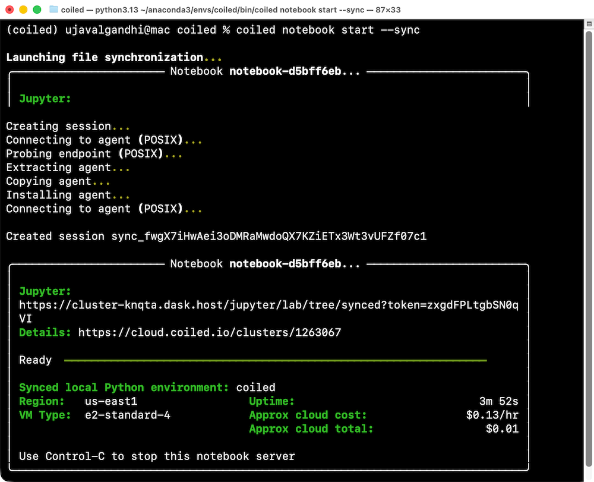
Running Your Notebook
- Download the example notebook to your machine. Visit coiled_s2_composite.ipynb and click the Download raw file button. Copy the file to your preferred directory where you started the coiled notebook. The file will appear in the Jupyter Lab instance that was launched by Coiled. Double-click to open the notebook.
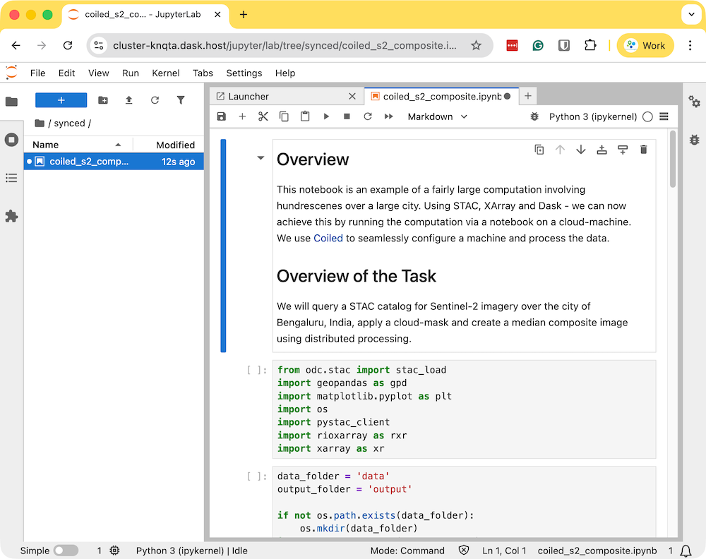
- Run the notebook to start the data processing. The notebook is running on a cloud machine and you can see the progress on the Dask Dashboard.
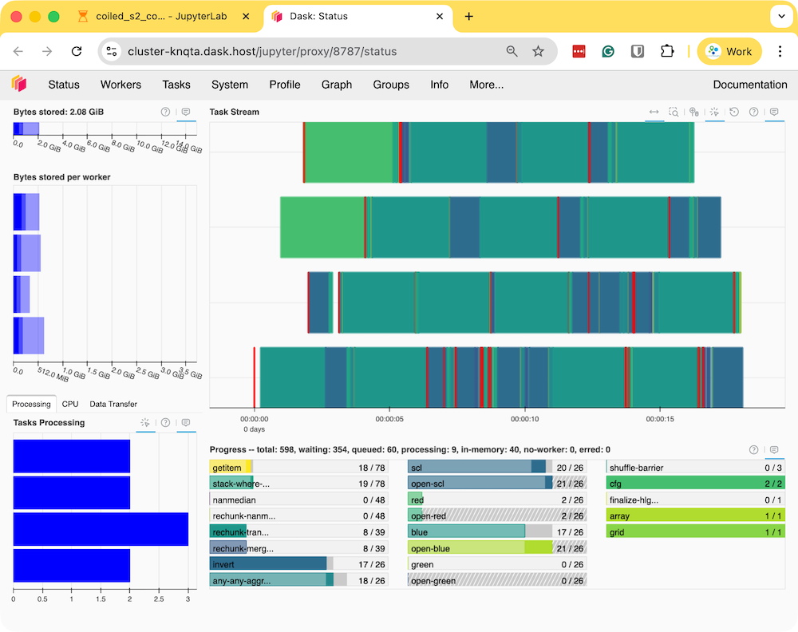
- Once the processing finishes, the resulting composite
rgb_composite_2024.tifwill be available in theoutputfolder which will be automatically synced to your machine.
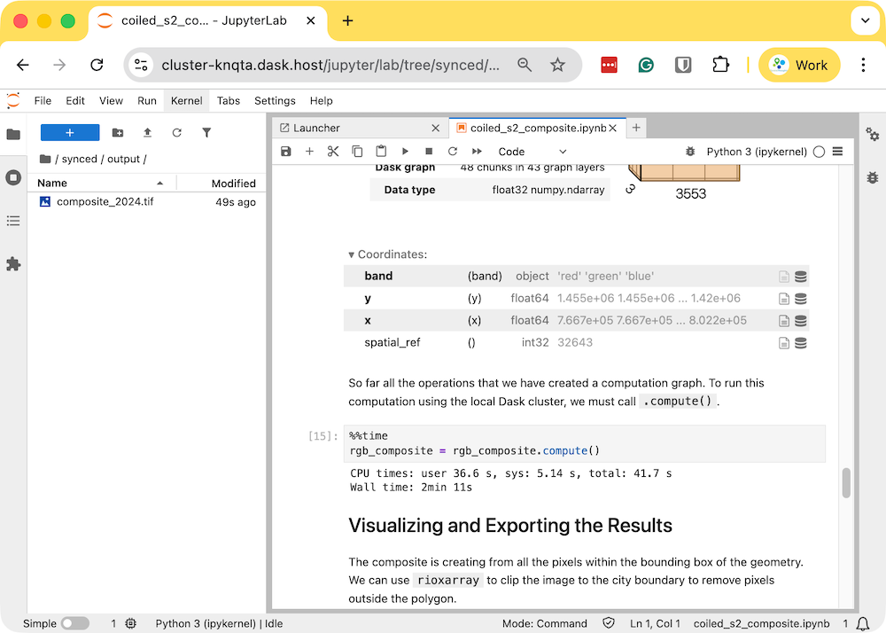
- The resulting Sentinel-2 RGB composite is now available on your machine and can be viewed using QGIS.
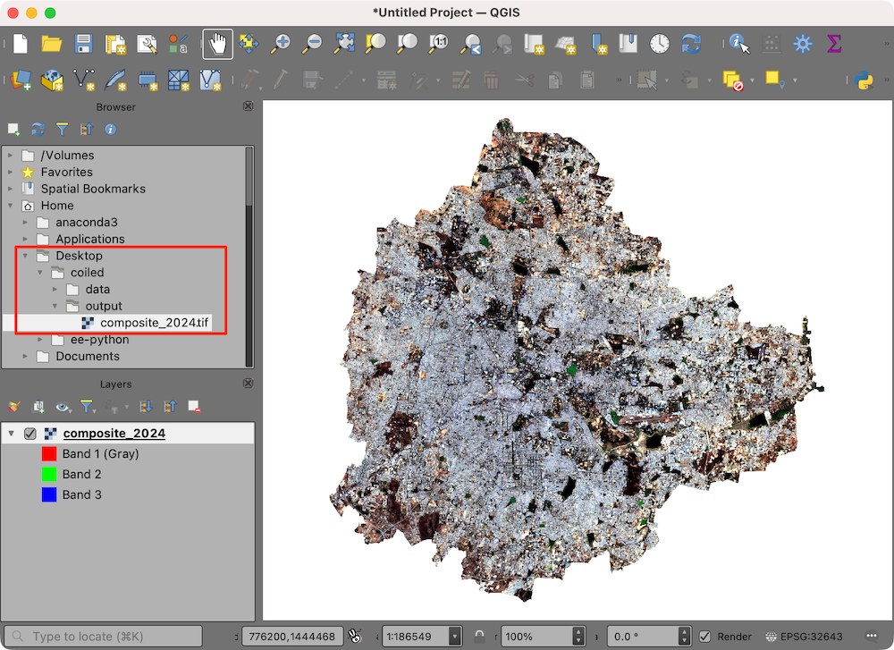
- Once you are done with processing, remember to stop the notebook server. This will stop the cloud instance.
If you forget to stop the server, you will continue getting charged for the running intance in the cloud. You can always visit the Coiled Dashboard to verify that there are no running clusters.
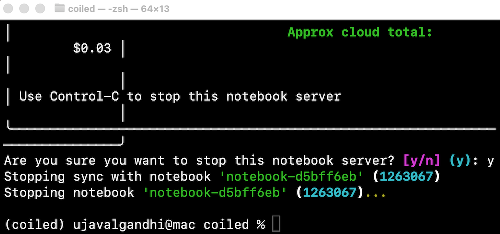
Supplement
Using Planetary Computer Data Catalog

This notebook shows how to access Sentinel-2 Level-2A data by querying Microsoft’s Planetary Computer Data Catalog. This catalog is served via STAC API and with the datasets hosted on Azure Blob Storage. As we are using open-standards for data-access, the process is largely similar to accessing the data from other STAC API endpoints, with a few minor differences based on how different providers have chosen to pre-process the data.
Setup and Data Download
The following blocks of code will install the required packages and download the datasets to your Colab environment.
%%capture
if 'google.colab' in str(get_ipython()):
!pip install pystac-client odc-stac rioxarray dask jupyter-server-proxy \
planetary_computerimport matplotlib.dates as mdates
import matplotlib.pyplot as plt
import os
import planetary_computer as pc
import pyproj
import pystac_client
import rioxarray as rxr
import xarray as xr
from odc import stacIf you are running this notebook in Colab, you will need to create and use a proxy URL to see the dashboard running on the local server.
Get Satellite Imagery using STAC API
We define a location and time of interest to get some satellite imagery.
# Define a small bounding box around the chosen point
km2deg = 1.0 / 111
x, y = (longitude, latitude)
r = 1 * km2deg # radius in degrees
bbox = (x - r, y - r, x + r, y + r)Let’s use Planetary Computer STAC API search endpoint to look for items from the sentinel-2-l2a collection on Azure Blob Storage.
catalog = pystac_client.Client.open(
'https://planetarycomputer.microsoft.com/api/stac/v1')
search = catalog.search(
collections=['sentinel-2-l2a'],
bbox=bbox,
datetime=f'{year}',
query={'eo:cloud_cover': {'lt': 30}},
)
items = search.item_collection()
itemsLoad the matching images as a XArray Dataset. Accessing data from
Planetary Computer is free but requires getting a Shared Access
Signature (SAS) token and sign the URLs. The
planetary_computer Python package provides a simple
mechanism for signing the URLs using sign() function.
Processing Data
We have a data cube of multiple scenes collected through the year. As XArray supports vectorized operations, we can work with the entire DataSet the same way we would process a single scene.
The Sentinel-2 scenes come with NoData value of 0. So we set the correct NoData value before further processing.
Apply scale and offset to all spectral bands
# Apply scale/offset
scale = 0.0001
offset = -0.1
# Select spectral bands (all except 'scl')
data_bands = [band for band in ds.data_vars if band != 'SCL']
for band in data_bands:
ds[band] = ds[band] * scale + offsetApply the cloud mask
Calculate NDVI and add it as a data variable.
Extracting Time-Series
We have a dataset with cloud-masked NDVI values at each pixel of each scene. Remember that none of these values are computed yet. Dask has a graph of all the operations that would be required to calculate the results.
We can now query this results for values at our chosen location. Once
we run compute() - Dask will fetch the required tiles from
the source data and run the operations to give us the results.
Our location coordinates are in EPSG:4326 Lat/Lon. Convert it to the CRS of the dataset so we can query it.
crs = ds.rio.crs
transformer = pyproj.Transformer.from_crs('EPSG:4326', crs, always_xy=True)
x, y = transformer.transform(longitude, latitude)
x,yQuery NDVI values at the coordinates.
Run the calculation and load the results into memory.
Plot the time-series.
fig, ax = plt.subplots(1, 1)
fig.set_size_inches(15, 7)
time_series.plot.line(
ax=ax, x='time',
marker='o', color='#238b45',
linestyle='-', linewidth=1, markersize=4)
# Format the x-axis to display dates as YYYY-MM
ax.xaxis.set_major_formatter(mdates.DateFormatter('%Y-%m'))
ax.xaxis.set_major_locator(mdates.MonthLocator(interval=2))
ax.set_title('NDVI Time-Series')
plt.show()Interpolate and Smooth the time-series
We use XArray’s excellent time-series processing functionality to smooth the time-series and remove noise.
# As we are proceesing the time-series,
# it needs to be in a single chunk along the time dimension
time_series = time_series.chunk(dict(time=-1))First, we resample the time-series to have a value every 5-days and fill the missing values with linear interpolation. Then we apply a moving-window smoothing to remove noise.
time_series_resampled = time_series\
.resample(time='5d').mean(dim='time').chunk(dict(time=-1))
time_series_interpolated = time_series_resampled \
.interpolate_na('time', use_coordinate=False)
time_series_smoothed = time_series_interpolated \
.rolling(time=3, min_periods=1, center=True).mean()fig, ax = plt.subplots(1, 1)
fig.set_size_inches(15, 7)
time_series.plot.line(
ax=ax, x='time',
marker='^', color='#66c2a4',
linestyle='--', linewidth=1, markersize=2)
time_series_smoothed.plot.line(
ax=ax, x='time',
marker='o', color='#238b45',
linestyle='-', linewidth=1, markersize=4)
# Format the x-axis to display dates as YYYY-MM
ax.xaxis.set_major_formatter(mdates.DateFormatter('%Y-%m'))
ax.xaxis.set_major_locator(mdates.MonthLocator(interval=2))
ax.set_title('Original vs. Smoothed NDVI Time-Series')
plt.show()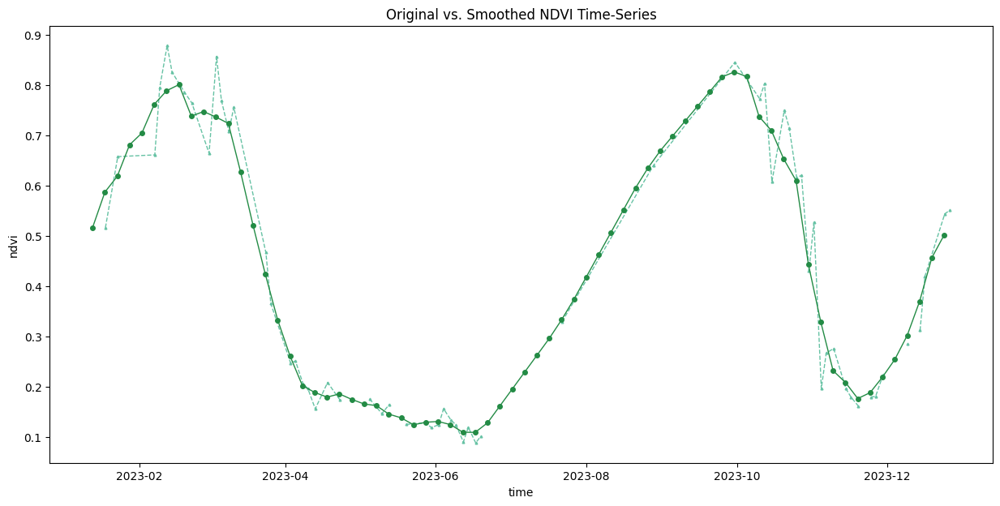
Save the Time-Series.
Convert the extracted time-series to a Pandas DataFrame.
Save the DataFrame as a CSV file.
Downloading Sentinel-2 Cloud Free Mosaics

This notebook shows how to access, process and save a large subset of the Sentinel 2 Cloud Free Temporal Mosaics provided by Earth Genome. The workflow involves accessing the annual cloud-free composites, stacking and scaling the required bands, tiling the region and saving each tile as a Cloud Optimized GeoTIFF (COG) in a remote Google Cloud Storage (GCS) bucket.

Setup and Data Download
The following blocks of code will install the required packages and download the datasets to your Colab environment.
%%capture
if 'google.colab' in str(get_ipython()):
!pip install pystac-client odc-stac rioxarray dask['distributed'] \
jupyter-server-proxyimport dask
import duckdb
import geopandas as gpd
import matplotlib.pyplot as plt
import numpy as np
import os
import pandas as pd
import pystac_client
import rioxarray as rxr
import tempfile
import xarray as xr
from datetime import datetime
from odc import stac
from osgeo import gdal
from shapely.geometry import boxdata_folder = 'data'
output_folder = 'output'
if not os.path.exists(data_folder):
os.mkdir(data_folder)
if not os.path.exists(output_folder):
os.mkdir(output_folder)Setup a local Dask cluster. This distributes the computation across multiple workers on your computer.
If you are running this notebook in Colab, you will need to create and use a proxy URL to see the dashboard running on the local server.
Select a Region of Interest
We use the FieldMaps GeoParquet file to select a large state in India.
parquet_url = 'https://data.fieldmaps.io/edge-matched/open/intl/adm1_polygons.parquet'
con = duckdb.connect()
con.install_extension('spatial')
con.load_extension('spatial')country = 'IND'
adm1_name = 'Karnātaka'
query = f'''
SELECT adm1_name, adm1_id, ST_AsText(geometry) AS geometry
FROM read_parquet('{parquet_url}')
WHERE
adm0_src = '{country}' and
adm1_name = '{adm1_name}'
'''
admin1_df = con.sql(query).df()
admin1_gdf = gpd.GeoDataFrame(
admin1_df, geometry=gpd.GeoSeries.from_wkt(admin1_df.geometry), crs='EPSG:4326'
)Earth Genome STAC
Earth Genome provides ready-to-use annual and semi-annual Sentinel-2 mosaics created to L2A scenes. We can use the Earth Genome STAC API Catalog to query for the matching tiles for our year and region of interest.
We define a location and time of interest to get some satellite imagery.
Search the catalog for matching tiles for the selected year.
search = catalog.search(
collections=['sentinel2-temporal-mosaics'],
bbox=bbox,
datetime=f'{year}'
)
items = search.item_collection()
# The annual mosaics have a date range that goes from
# 1-Jan-{year} to 1-jan-{year+1}
# This matches items for 2 years in the above query
# We filter these using the start_datetime and end_datetime
# properties in the item metadata
# Create a start and end datetime strings
start_date = datetime(year, 1, 1).strftime('%Y-%m-%dT%H:%M:%SZ')
end_date = datetime(year + 1, 1, 1).strftime('%Y-%m-%dT%H:%M:%SZ')
items_filtered = [
item for item in items
if item.properties['start_datetime'] == start_date
and item.properties['end_datetime'] == end_date
]Load STAC Images to XArray
Load the matching images as a XArray Dataset.
ds = stac.load(
items_filtered,
bands=['B04', 'B03', 'B02'],
resolution=10,
crs='utm',
chunks={'x': 1000, 'y':1000}, # <-- use Dask
groupby='solar_day',
preserve_original_order=True
)
dsSince all the tiles are for the same year, we can remove the time dimension.
Each band of the scene is saved with integer pixel values (data type
uint16). This help save the storage cost as storing the
reflectance values as floating point numbers (data type
float64) requires more storage. We need to convert the raw
pixel values to reflectances by applying the scale values. The
scale 0.0001.
Convert to a DataArray.
Create a Grid
Instead of writing a single large file, we can tile the outputs into smaller tiles for ease of access.
We start by creating a grid and specifying the size of each tile in pixels.
Reproject the geometry to match the CRS of the DataArray.
left, bottom, right, top = scene_da.rio.bounds()
minx, miny, maxx, maxy = gdf_proj.total_bounds
res_x = (right - left) / scene_da.sizes['x']
res_y = (top - bottom) / scene_da.sizes['y']
TILE_SIZE_M = TILE_SIZE * res_x # e.g. 10000 * 10.0 = 100000m
xs = np.arange(minx, maxx, TILE_SIZE_M)
ys = np.arange(miny, maxy, TILE_SIZE_M)
tiles = [
box(x, y, x + TILE_SIZE_M, y + TILE_SIZE_M)
for y in sorted(ys, reverse=True)
for x in xs
]
grid = gpd.GeoDataFrame(geometry=tiles, crs=scene_da.rio.crs)
grid = grid[grid.intersects(gdf_proj.union_all())].reset_index(drop=True)
grid['tile_id'] = [
f'tile_{(i // len(ys)) + 1:02d}_{(i % len(ys)) + 1:02d}'
for i in grid.index
]
print(f'{len(grid)} tiles intersect geometry')Save the Tiles
We can save the tiles to a Google Cloud Storage (GCS) bucket. You may also just save them locally if you wish.
# Specify your project ID and Bucket name
project_id = 'python-363014'
bucket_name = 'spatialthoughts-public-data'
sub_folder = 'sentinel-2/cloud-free-mosaics'if 'google.colab' in str(get_ipython()):
from google.colab import auth
from google.cloud import storage
auth.authenticate_user()
client = storage.Client(project=project_id)
bucket = client.get_bucket(bucket_name)
print(f'Google Cloud Storage client initialized for project: {project_id}')
print(f'Bucket {bucket_name} selected.')We now fetch the data for each grid tile, clip it and save it as a COG.
geometry_crs = gdf_proj.geometry
gcs_tile_paths = []
for _, row in grid.iterrows():
tile_id = row['tile_id']
print(f'Processing {tile_id}')
tile_bounds = row.geometry.bounds # (minx, miny, maxx, maxy)
# Construct the GCS blob path relative to the bucket
gcs_blob_path = f'{sub_folder}/{tile_id}.tif'
gcs_tile_paths.append(f'/vsigs/{bucket.name}/{gcs_blob_path}')
if bucket.blob(gcs_blob_path).exists():
print(f'Tile {tile_id} already exists in GCS. Skipping.')
continue
# Pull only this tile into RAM
tile = scene_da.rio.clip_box(*tile_bounds).compute()
try:
tile_clipped = tile.rio.clip(geometry_crs)
except Exception:
continue
# Save to a temporary local file first
with tempfile.NamedTemporaryFile(suffix='.tif', delete=False) as tmp_file:
local_tile_path = tmp_file.name
tile_clipped.rio.to_raster(local_tile_path, driver='COG')
blob = bucket.blob(gcs_blob_path)
print(f'Uploading {local_tile_path} to gs://{bucket.name}/{gcs_blob_path}')
blob.upload_from_filename(local_tile_path)
os.remove(local_tile_path) # Clean up the local temporary file
print(f'Successfully uploaded {tile_id}.tif')
print('All tiles processed and uploaded to GCS.')To enable viewing and processing all the tiles as a single mosaic, we create a Virtual Dataset (VRT) file. This VRT references all the individual tiles and you can load this VRT file using QGIS or rioxarray which will load as the merged mosaic.
with tempfile.NamedTemporaryFile(suffix='.vrt', delete=False) as tmp_file:
local_vrt_path = tmp_file.name
vrt = gdal.BuildVRT(local_vrt_path, gcs_tile_paths)
vrt.FlushCache()
vrt = None
vrt_blob_path = f'{sub_folder}/mosaic.vrt'
bucket.blob(vrt_blob_path).upload_from_filename(local_vrt_path)
os.remove(local_vrt_path)
print(f'VRT uploaded to gs://{bucket.name}/{vrt_blob_path}')Data Credits
- Sentinel-2 Level 2A Scenes: Contains modified Copernicus Sentinel data (2025-02)
- Bangalore Ward Maps Provided by Spatial Data of Municipalities (Maps) Project by Data{Meet}.
- Admin boundaries: FieldMaps, geoBoundaries, U.S. Department of State, OpenStreetMap
License
This workshop material is licensed under a Creative Commons Attribution 4.0 International (CC BY 4.0). You are free to re-use and adapt the material but are required to give appropriate credit to the original author as below:
Scalable Remote Sensing Workflows with Xarray workshop by Ujaval Gandhi www.spatialthoughts.com
© 2025 Spatial Thoughts www.spatialthoughts.com
If you want to report any issues with this page, please comment below.